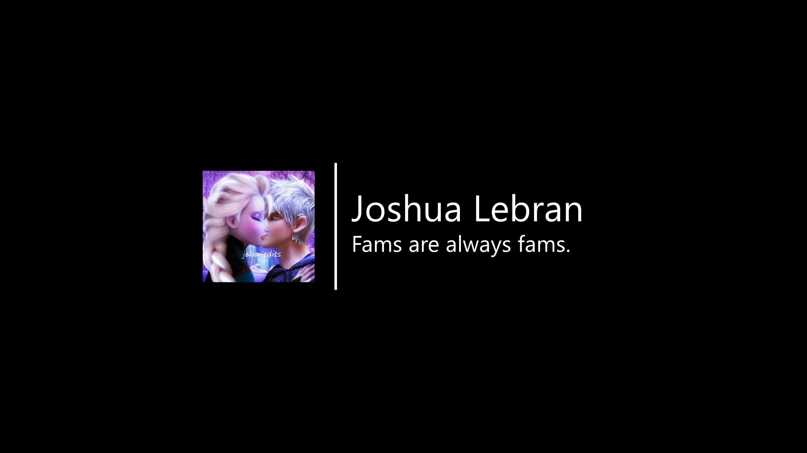

first of all, thanks for 100 subs on yt!! it's been an absolute pleasure to be able to kick back into the youtubing scene after many months of inactivity back then. it somehow made me feel nostalgic cuz I've been into making content across channels that I invest in, and this channel is one of them.
I started the @thebelovedmoon channel as just one of my sub-channels back in 2015 cuz I've been a diehard JElsa (Jack and Elsa) shipper back in the days of "Rise of the Guardians" and "Frozen" to which I myself found an affinity to. below is the channel header for that at the time. (and yes, that's my name alright.)
since the life restart last Sep 2019, I've been trying to distance myself from everything related to Internet to try and reevaluate myself. 2020 saw as a catalyst for my return cuz the content creation that I've been aching to have is lingering, wanting me to return to what I do most. this video below is the first video that was uploaded to my channel, dated 19 Mar 2020, 4 days after my 27th birthday.
it still kept the same "Elsa" spirit that I always had since the channel's inception. by the remainder of the year, I tried to change the course of my interests through Touhou, KuruHS (wc is still persistent to this day), and Sheet Music Boss.
and just before the end of the same year, so is the beginning of my time with DEAD OR ALIVE Xtreme Venus Vacation (DOAXVV). more on that later.
when February 2021 rolled through I got my hands on Arcaea, which saw as an opportunity for me to try my hand at rhythm games.
that gave me multitude of ideas of what content creation I'm investing to in the long run at the time.
July came around and my presence on the Internet changed forever: I heard of Horror Shop Games and one of theirs -- Mother -- from ManlyBadassHero and it clicked through me that I wanna try it out myself. the videos below were those that started it all in its entirety.
some days later, I found myself making these contents, and around the time where music production became my new routine, I made compos for such sorts.
that alone gave me a mark that will forever etch in my memory as the day I represent myself in the Horror Shop Games community as the revered Mother -- Mother Agatha. (backstory on that last bit: jatzy, the main dev of the pact, had thought of the name when making the game, and also spilled out the details when asked about the origins of the game. a bit fitting as when I realized that was the thing I inadvertently added it as a server nickname.. welp, everything went from there.)
2022 rolled in and I migrated from prepaid consumable to fiber optic ISP. as with it, came my interest to upload every single DOAXVV session since I retired from livetweeting it on my twtr.
but before Valentine's Day (14 Feb) rolled in, I've been uploading things on the prepaid consumable to get the gist of what's what. this video was the very first that got me into uploading DOAXVV VODs as a whole, therefore resuming my sessions from there.
during that time, I got into a series of contents surrounding Yandere Heaven, and the recently-closed Princess Connect! Re:Dive Global EN. I've recently compiled all of the things I had with the latter in this playlist below.
when I saw that I was enthralled with PriConne espc with the two characters -- mama Rei and mama Kaiser (Kaiser Insight), I know that I need to do smth to corroborate them as much as I can. as such, I represent as mama Rei for GourmetDayLife (wc started as the showcase of some of my guildhouses aswell as others), while mama Kaiser when I started streming for the first time.
mama Kaiser herself became the catalyst of my desire to become a streamer -- and essentially, a vtuber. some origins first tho: I started taking a full interest in the vtubing industry upon learning the termination of Uruha Rushia from HOLOLIVE last 24 Feb 2022. from that on, I vowed to support all the vtubers that I meet in her honor. I found some good fwens along the way, the likes of mama RIORIO and mama Viv, whom I grew up with alongside my first-ever fwen from the vtubing scene -- Lina Scott!! July came around when I started streming -- which is mama Kaiser's birthday month (cuz her bday is exactly 1 Jul), so it's kinda coincidental in a way.
everything kicked off without a hitch, with just bandwidth hiccups, but we got it going and I was able to find myself well within the vtubing scene in my own pace!!
that genesis is still ongoing as I decided by August to represent myself as who I want to be -- a Mother whose her responsibility is to take care of whom she cared for.

when I begin to kindle with Aura Ostara (mama dearest💚🍃) as we share some similarities, I devote to myself to support her with the best I can. and what way to begin that than to change the hair and cosmetic colors from purple to green (the former being the original png from horrorshopgames) -- a sign of rebirth and kindling of destinies.

everything changed around the time when I begin to connect with Hina Oujo/HinaSukii (mama queenie💗🌸) last June, where I used the old png before I changed its colors. and with it, come a nickname that will forever leave a mark in my time as a vtuber: 💚🍃Aga-chuu💗🌸!! (the name has since officiated 11 Jan 2023)
it's now in the open!! officializing the nickname I've been associated with since becoming a vtuber supporter, this name will now be used across all vtuber-related activities and others related to it!!💚🍃💗🌸
— 💚🍃Aga-chuu💗🌸 #VWriter (@thebelovedmoon) January 11, 2023
the official hashtag: #AgaChuu pic.twitter.com/8E8y5U0YJc
everything that happend in the vtubing scene happend cuz I represent using a png that associates with what I represent in the horrorshop community, and made it unique so that it can diversify and universalize the experiences of many.
starting from August onwards, I've already set the new png into motion -- its first actual appearance being on this VOD below.
despite everything, I still can't forget the DOAXVV tradition with most of the vods, with the two videos below being before-and-after with the improvements in the design elements.
the most of my uploaded videos were DOAXVV recordings as of this blog, and I'm not planning on pausing in the long term anytime soon.
welp, happy 100 subs to me!! hopefully I'll get to make more content on YouTube as we look into the diversified future of content creation.
💚🍃Aga-chuu loves you uwu💗🌸
published